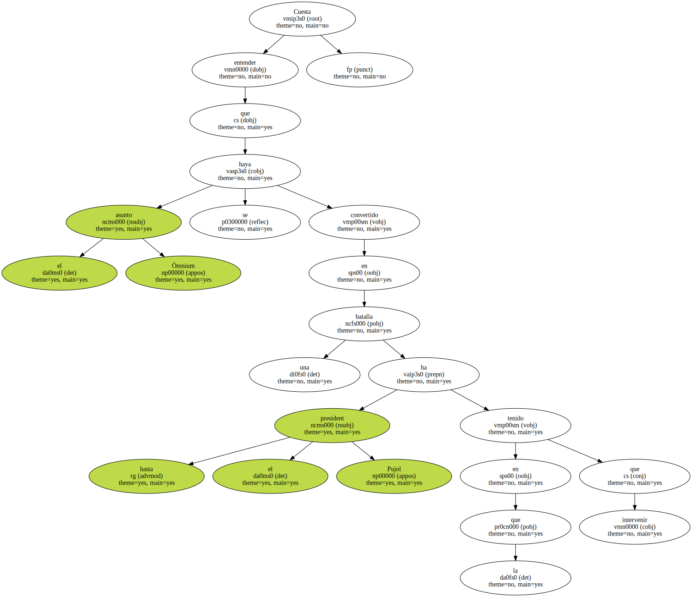
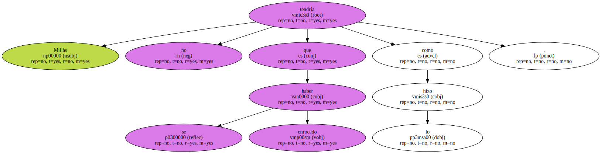
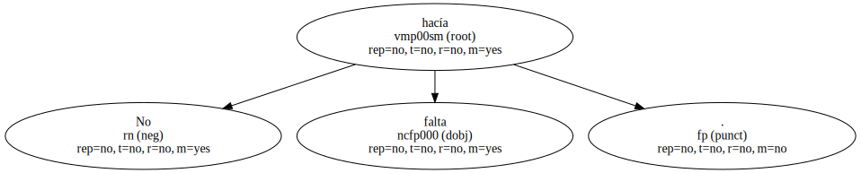
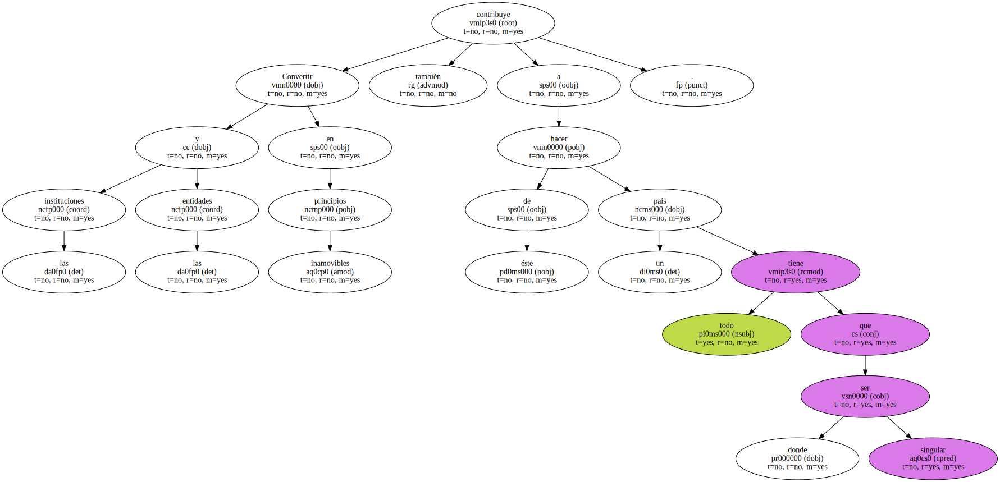
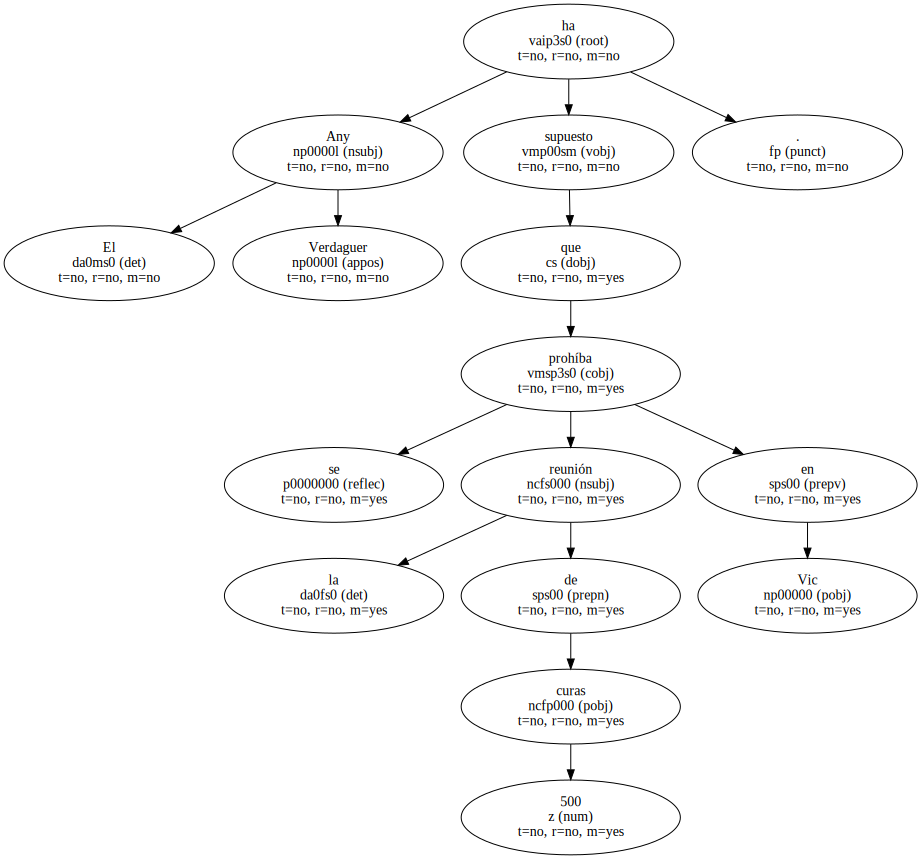
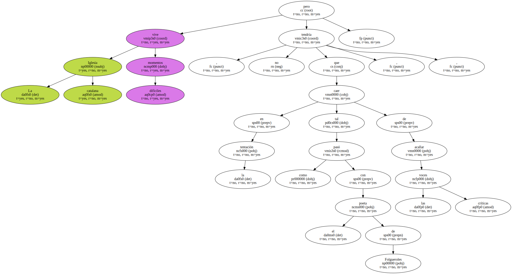
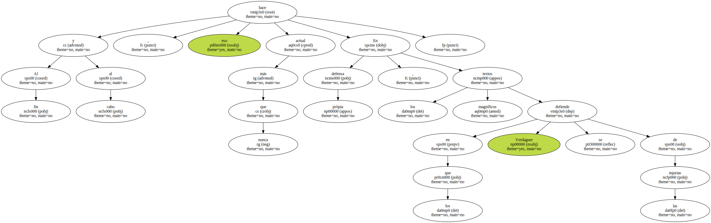

Cuesta entender que el asunto Òmnium se haya convertido en una batalla en la que hasta el president Pujol ha tenido que intervenir.
Millàs no se tendría que haber enrocado como lo hizo.
No hacía falta.
Convertir las instituciones y las entidades en principios inamovibles contribuye también a hacer de éste un país donde todo tiene que ser singular.
El Any Verdaguer ha supuesto que se prohíba la reunión de 500 curas en Vic.
Lamentable.

La Iglesia catalana vive momentos difíciles , pero no tendría que caer en la tentación , tal como pasó con el poeta de Folgueroles , de acallar las voces críticas.
Al fin y al cabo , eso hace más actual que nunca En defensa pròpia , los textos magníficos en los que Verdaguer se defiende de las injurias.
